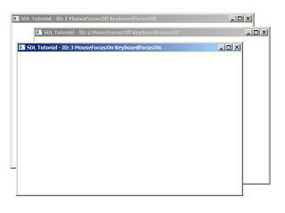

Multiple Windows

Last Updated 4/29/14
One of the new features SDL 2 has is being able to handle multiple windows at once. In this tutorial we'll be moving around 3 resizable windows.//Total windows
const int TOTAL_WINDOWS = 3;
class LWindow
{
public:
//Intializes internals
LWindow();
//Creates window
bool init();
//Handles window events
void handleEvent( SDL_Event& e );
//Focuses on window
void focus();
//Shows windows contents
void render();
//Deallocates internals
void free();
//Window dimensions
int getWidth();
int getHeight();
//Window focii
bool hasMouseFocus();
bool hasKeyboardFocus();
bool isMinimized();
bool isShown();
private:
//Window data
SDL_Window* mWindow;
SDL_Renderer* mRenderer;
int mWindowID;
//Window dimensions
int mWidth;
int mHeight;
//Window focus
bool mMouseFocus;
bool mKeyboardFocus;
bool mFullScreen;
bool mMinimized;
bool mShown;
};
Here is our window wrapper from before with a few adjustments. We want to be able to grab focus and we want to tell if
the window is shown so we add functions to do that.
Each window is going to have their own renderer so we add a member variable for that. We also keep track of the window ID to tell which events belong to which window and we also added a flag to keep track of whether the window is shown.
Each window is going to have their own renderer so we add a member variable for that. We also keep track of the window ID to tell which events belong to which window and we also added a flag to keep track of whether the window is shown.
//Our custom windows
LWindow gWindows[ TOTAL_WINDOWS ];
For this program we'll have 3 globally allocated windows.
bool LWindow::init()
{ //Create window mWindow = SDL_CreateWindow( "SDL Tutorial",
SDL_WINDOWPOS_UNDEFINED, SDL_WINDOWPOS_UNDEFINED, SCREEN_WIDTH,
SCREEN_HEIGHT, SDL_WINDOW_SHOWN | SDL_WINDOW_RESIZABLE ); if( mWindow
!= NULL ) { mMouseFocus = true; mKeyboardFocus = true; mWidth =
SCREEN_WIDTH; mHeight = SCREEN_HEIGHT; //Create renderer for window
mRenderer = SDL_CreateRenderer( mWindow, -1, SDL_RENDERER_ACCELERATED |
SDL_RENDERER_PRESENTVSYNC ); if( mRenderer == NULL ) { printf(
"Renderer could not be created! SDL Error: %s\n", SDL_GetError() );
SDL_DestroyWindow( mWindow ); mWindow = NULL; } else { //Initialize
renderer color SDL_SetRenderDrawColor( mRenderer, 0xFF, 0xFF, 0xFF,
0xFF ); //Grab window identifier mWindowID = SDL_GetWindowID( mWindow
); //Flag as opened mShown = true; } } else { printf( "Window could not
be created! SDL Error: %s\n", SDL_GetError() ); } return mWindow !=
NULL && mRenderer != NULL;
}
Here is our window and renderer creation code. It
is pretty much the same as we have always done it, only now it's
happening inside our wrapper class. We do have to make sure to grab
the window ID after creating the window as we'll need the ID for event
handling.
void LWindow::handleEvent( SDL_Event& e )
{
//If an event was detected for this window
if( e.type == SDL_WINDOWEVENT && e.window.windowID == mWindowID )
{
//Caption update flag
bool updateCaption = false;
All events from all windows go onto the same event
queue, so to know which events belong to which window we check that the
event's window ID matches ours.
switch( e.window.event )
{
//Window appeared
case SDL_WINDOWEVENT_SHOWN:
mShown = true;
break;
//Window disappeared
case SDL_WINDOWEVENT_HIDDEN:
mShown = false;
break;
//Get new dimensions and repaint
case SDL_WINDOWEVENT_SIZE_CHANGED:
mWidth = e.window.data1;
mHeight = e.window.data2;
SDL_RenderPresent( mRenderer );
break;
//Repaint on expose
case SDL_WINDOWEVENT_EXPOSED:
SDL_RenderPresent( mRenderer );
break;
//Mouse enter
case SDL_WINDOWEVENT_ENTER:
mMouseFocus = true;
updateCaption = true;
break;
//Mouse exit
case SDL_WINDOWEVENT_LEAVE:
mMouseFocus = false;
updateCaption = true;
break;
//Keyboard focus gained
case SDL_WINDOWEVENT_FOCUS_GAINED:
mKeyboardFocus = true;
updateCaption = true;
break;
//Keyboard focus lost
case SDL_WINDOWEVENT_FOCUS_LOST:
mKeyboardFocus = false;
updateCaption = true;
break;
//Window minimized
case SDL_WINDOWEVENT_MINIMIZED:
mMinimized = true;
break;
//Window maxized
case SDL_WINDOWEVENT_MAXIMIZED:
mMinimized = false;
break;
//Window restored
case SDL_WINDOWEVENT_RESTORED:
mMinimized = false;
break;
When you have multiple windows, Xing out the
window doesn't necessarily mean we're quitting the program. What we're
going to do instead is have each window hide when Xed out. So
we'll need keep track of when the window is hidden/shown by checking
for SDL_WINDOWEVENT_SHOWN/SDL_WINDOWEVENT_HIDDEN events.
//Hide on close case SDL_WINDOWEVENT_CLOSE:
SDL_HideWindow( mWindow ); break; } //Update window caption with new
data if( updateCaption ) { std::stringstream caption; caption <<
"SDL Tutorial - ID: " << mWindowID << " MouseFocus:"
<< ( ( mMouseFocus ) ? "On" : "Off" ) << " KeyboardFocus:"
<< ( ( mKeyboardFocus ) ? "On" : "Off" ); SDL_SetWindowTitle(
mWindow, caption.str().c_str() ); } }
}
When you have multiple windows, Xing out the
window gets interpreted as SDL_WINDOWEVENT_CLOSE window events. When we
get these events we're going to hide the window using SDL_HideWindow.
void LWindow::focus()
{
//Restore window if needed
if( !mShown )
{
SDL_ShowWindow( mWindow );
}
//Move window forward
SDL_RaiseWindow( mWindow );
}
Here is our function for grabbing focus to a window. First we check if our window is even being shown and then show it with
SDL_ShowWindow if it isn't being shown. Next we call
SDL_RaiseWindow to focus the window.
void LWindow::render()
{
if( !mMinimized )
{
//Clear screen
SDL_SetRenderDrawColor( mRenderer, 0xFF, 0xFF, 0xFF, 0xFF );
SDL_RenderClear( mRenderer );
//Update screen
SDL_RenderPresent( mRenderer );
}
}
Like before, we only want to render if the window is not minimized.
bool init()
{
//Initialization flag
bool success = true;
//Initialize SDL
if( SDL_Init( SDL_INIT_VIDEO ) < 0 )
{
printf( "SDL could not initialize! SDL Error: %s\n", SDL_GetError() );
success = false;
}
else
{
//Set texture filtering to linear
if( !SDL_SetHint( SDL_HINT_RENDER_SCALE_QUALITY, "1" ) )
{
printf( "Warning: Linear texture filtering not enabled!" );
}
//Create window
if( !gWindows[ 0 ].init() )
{
printf( "Window 0 could not be created!\n" );
success = false;
}
}
return success;
}
In the initialization function we open up a single window to check if window creation is functioning properly.
void close()
{
//Destroy windows
for( int i = 0; i < TOTAL_WINDOWS; ++i )
{
gWindows[ i ].free();
}
//Quit SDL subsystems
SDL_Quit();
}
In the clean up function we close out any windows that might be open.
//Initialize the rest of the windows
for( int i = 1; i < TOTAL_WINDOWS; ++i )
{
gWindows[ i ].init();
}
//Main loop flag
bool quit = false;
//Event handler
SDL_Event e;
Before we enter the main loop we open up the rest of the windows we have.
//While application is running
while( !quit )
{
//Handle events on queue
while( SDL_PollEvent( &e ) != 0 )
{
//User requests quit
if( e.type == SDL_QUIT )
{
quit = true;
}
//Handle window events
for( int i = 0; i < TOTAL_WINDOWS; ++i )
{
gWindows[ i ].handleEvent( e );
}
//Pull up window
if( e.type == SDL_KEYDOWN )
{
switch( e.key.keysym.sym )
{
case SDLK_1:
gWindows[ 0 ].focus();
break;
case SDLK_2:
gWindows[ 1 ].focus();
break;
case SDLK_3:
gWindows[ 2 ].focus();
break;
}
}
}
In the main loop after we handle the events for all the windows, we
handle some special key presses. For this demo, when we press 1, 2, or
3 it will bring the corresponding window to
focus.
//Update all windows
for( int i = 0; i < TOTAL_WINDOWS; ++i )
{
gWindows[ i ].render();
}
//Check all windows
bool allWindowsClosed = true;
for( int i = 0; i < TOTAL_WINDOWS; ++i )
{
if( gWindows[ i ].isShown() )
{
allWindowsClosed = false;
break;
}
}
//Application closed all windows
if( allWindowsClosed )
{
quit = true;
}
}
Next we render all the windows and then go through
all the windows to check if any of them are shown. If all of them have
been closed out we set the quit flag to true to end the
program.
Now in this demo we did not actually render anything inside of the windows. This would involve having to manage renderers and windows and having them share resources. There is no right way to do this and the best way depends entirely on what type of application you're building. I recommend reading through the SDL documentation to understand how renderers work and then experimenting to figure out the best way for you to manage your resources.
Now in this demo we did not actually render anything inside of the windows. This would involve having to manage renderers and windows and having them share resources. There is no right way to do this and the best way depends entirely on what type of application you're building. I recommend reading through the SDL documentation to understand how renderers work and then experimenting to figure out the best way for you to manage your resources.